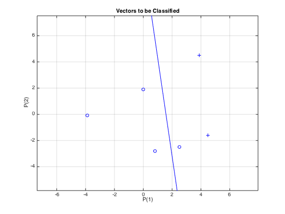
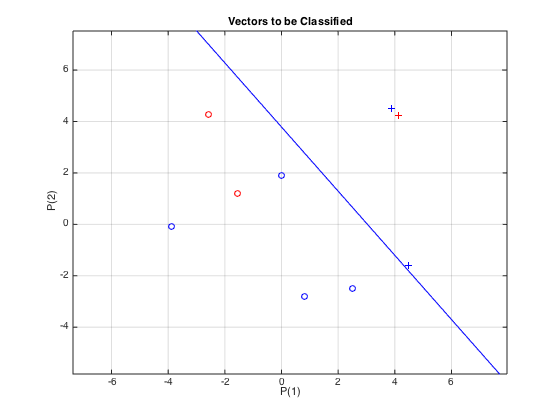
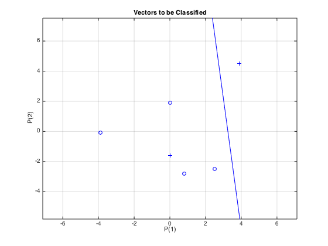
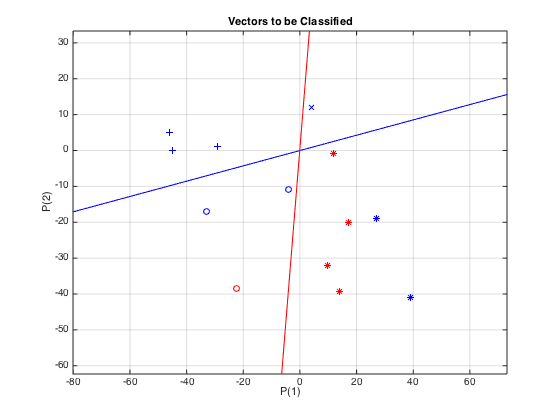

Contents
1.0
clc;
clear;
t = [0 1 0 0 0 1];
x = [-39 45 8 25 0 39;
-1 -16 -28 -25 19 45] ./ 10;
net = perceptron('hardlim', 'learnp');
net.inputs{1}
net.layers{1}
net.outputs{1}
net.inputWeights{1, 1}
net.biases{1}
net = configure(net, x, t);
net.name = 'My Network';
net.inputWeights{1,1}.initFcn = 'rands';
net.biases{1}.initFcn = 'rands';
net = init(net);
input_weights = net.IW{1, 1}
biases = net.b{1}
display(net);
passes = 5;
[~, columns] = size(x);
for i = 1 : passes
for j = 1 : columns
P = x(:, j);
T = t(:, j);
IW = net.IW{1, 1};
b = net.b{1};
Y = hardlim(IW * P + b);
E = T - Y;
perf = mae(E);
if (~perf)
continue;
end
dW = E * P';
db = E;
net.IW{1, 1} = IW + dW;
net.b{1} = b + db;
end
i
iw = net.IW{1, 1}
b = net.b{1}
if (~ mae(t - net(x)))
break;
end
end
all_err = mae(t - net(x))
y = net(x);
err = t - y;
h = mae(err);
disp({'mae(err) = ', h});
plotpv(x,t), grid
plotpc(net.IW{1,1}, net.b{1});
ans =
Neural Network Input
name: 'Input'
feedbackOutput: []
processFcns: {}
processParams: {1x0 cell array of 0 params}
processSettings: {0x0 cell array of 0 settings}
processedRange: []
processedSize: 0
range: []
size: 0
userdata: (your custom info)
ans =
Neural Network Layer
name: 'Hard Limit'
dimensions: 0
distanceFcn: (none)
distanceParam: (none)
distances: []
initFcn: 'initwb'
netInputFcn: 'netsum'
netInputParam: (none)
positions: []
range: []
size: 0
topologyFcn: (none)
transferFcn: 'hardlim'
transferParam: (none)
userdata: (your custom info)
ans =
Neural Network Output
name: 'Output'
feedbackInput: []
feedbackDelay: 0
feedbackMode: 'none'
processFcns: {}
processParams: {1x0 cell array of 0 params}
processSettings: {0x0 cell array of 0 settings}
processedRange: []
processedSize: 0
range: []
size: 0
userdata: (your custom info)
ans =
Neural Network Weight
delays: 0
initFcn: '<a href="matlab:doc initzero">initzero</a>'
initSettings: (none)
learn: true
learnFcn: '<a href="matlab:doc learnp">learnp</a>'
learnParam: (none)
size: [0 0]
weightFcn: '<a href="matlab:doc dotprod">dotprod</a>'
weightParam: (none)
userdata: (your custom info)
ans =
Neural Network Bias
initFcn: '<a href="matlab:doc initzero">initzero</a>'
learn: true
learnFcn: '<a href="matlab:doc learnp">learnp</a>'
learnParam: (none)
size: 0
userdata: (your custom info)
input_weights =
0.8116 -0.7460
biases =
0.6294
net =
Neural Network
name: 'My Network'
userdata: (your custom info)
dimensions:
numInputs: 1
numLayers: 1
numOutputs: 1
numInputDelays: 0
numLayerDelays: 0
numFeedbackDelays: 0
numWeightElements: 3
sampleTime: 1
connections:
biasConnect: true
inputConnect: true
layerConnect: false
outputConnect: true
subobjects:
input: Equivalent to inputs{1}
output: Equivalent to outputs{1}
inputs: {1x1 cell array of 1 input}
layers: {1x1 cell array of 1 layer}
outputs: {1x1 cell array of 1 output}
biases: {1x1 cell array of 1 bias}
inputWeights: {1x1 cell array of 1 weight}
layerWeights: {1x1 cell array of 0 weights}
functions:
adaptFcn: 'adaptwb'
adaptParam: (none)
derivFcn: 'defaultderiv'
divideFcn: 'dividetrain'
divideParam: (none)
divideMode: 'sample'
initFcn: 'initlay'
performFcn: 'mae'
performParam: .regularization, .normalization
plotFcns: {'plotperform', plottrainstate,
plotconfusion}
plotParams: {1x3 cell array of 3 params}
trainFcn: 'trainc'
trainParam: .showWindow, .showCommandLine, .show, .epochs,
.time, .goal, .max_fail
weight and bias values:
IW: {1x1 cell} containing 1 input weight matrix
LW: {1x1 cell} containing 0 layer weight matrices
b: {1x1 cell} containing 1 bias vector
methods:
adapt: Learn while in continuous use
configure: Configure inputs & outputs
gensim: Generate Simulink model
init: Initialize weights & biases
perform: Calculate performance
sim: Evaluate network outputs given inputs
train: Train network with examples
view: View diagram
unconfigure: Unconfigure inputs & outputs
i =
1
iw =
3.9116 4.6540
b =
-0.3706
i =
2
iw =
3.9116 2.7540
b =
-1.3706
i =
3
iw =
1.4116 3.3540
b =
-3.3706
i =
4
iw =
3.4116 2.3540
b =
-4.3706
i =
5
iw =
3.4116 0.4540
b =
-5.3706
all_err =
0.1667
'mae(err) = ' [0.1667]

1.4
net.inputWeights{1,1}.initFcn = 'rands';
net.biases{1}.initFcn = 'rands';
net.trainParam.epochs = 50;
net = init(net);
[net, tr] = train(net, x, t);
y = net(x);
iw = net.IW{1, 1}
b = net.b{1}
disp(mae(t - y));
e = mae(t - y)
figure;
lower = min(x, [], 2);
upper = max(x, [], 2);
points = 3;
Tpts = repmat(lower, 1, points) + repmat(upper - lower, 1, points) .* rand(2, points);
disp(Tpts);
TRes = net(Tpts);
plotpv(Tpts, TRes);
point = findobj(gca, 'type', 'line');
set(point, 'Color', 'red');
hold on;
plotpv(x ,t);
plotpc(net.IW{1,1}, net.b{1});
grid on
hold off
iw =
2.3647 1.8951
b =
-7.1732
0
e =
0
-1.5606 4.1431 -2.5761
1.1922 4.2437 4.2853

PART 2
clc;
x = [-39 0 8 25 0 39;
-1 -16 -28 -25 19 45] ./ 10;
net = configure(net, x, t);
net.inputWeights{1, 1}.initFcn = 'rands';
net.biases{1}.initFcn = 'rands';
net = init(net);
[net, ty] = train(net, x, t);
figure;
plotpv(x, t), grid
plotpc(net.IW{1, 1}, net.b{1});

PART 3
clc;
x1 = [ 39 -46 27 -33 -29 4 -4 -45;
-41 5 -19 -17 1 12 -11 0];
t1 = [0 1 0 0 1 1 0 1;
1 0 1 0 0 1 0 0];
net = perceptron('hardlim', 'learnp');
net.inputs{1}
net.layers{1}
net.outputs{1}
net.inputWeights{1, 1}
net.biases{1}
net = configure(net, x1, t1);
net.inputWeights{1, 1}.initFcn = 'rands';
net.biases{1}.initFcn = 'rands';
net.trainParam.epochs = 50;
net = init(net);
[net, tr] = train(net, x1, t1);
figure;
plotpv(x1, t1), grid
plotpc(net.IW{1, 1}, net.b{1});
lower = min(x1, [], 2);
upper = max(x1, [], 2);
points = 5;
Tpts = repmat(lower, 1, points) + repmat(upper - lower, 1, points) .* rand(2, points);
TRes = net(Tpts);
iw = net.IW{1, 1}
b = net.b{1}
plotpv(Tpts, TRes);
point = findobj(gca, 'type', 'line');
set(point, 'Color', 'red');
hold on;
plotpv(x1 ,t1);
plotpc(net.IW{1,1}, net.b{1});
grid on
hold off
ans =
Neural Network Input
name: 'Input'
feedbackOutput: []
processFcns: {}
processParams: {1x0 cell array of 0 params}
processSettings: {0x0 cell array of 0 settings}
processedRange: []
processedSize: 0
range: []
size: 0
userdata: (your custom info)
ans =
Neural Network Layer
name: 'Hard Limit'
dimensions: 0
distanceFcn: (none)
distanceParam: (none)
distances: []
initFcn: 'initwb'
netInputFcn: 'netsum'
netInputParam: (none)
positions: []
range: []
size: 0
topologyFcn: (none)
transferFcn: 'hardlim'
transferParam: (none)
userdata: (your custom info)
ans =
Neural Network Output
name: 'Output'
feedbackInput: []
feedbackDelay: 0
feedbackMode: 'none'
processFcns: {}
processParams: {1x0 cell array of 0 params}
processSettings: {0x0 cell array of 0 settings}
processedRange: []
processedSize: 0
range: []
size: 0
userdata: (your custom info)
ans =
Neural Network Weight
delays: 0
initFcn: '<a href="matlab:doc initzero">initzero</a>'
initSettings: (none)
learn: true
learnFcn: '<a href="matlab:doc learnp">learnp</a>'
learnParam: (none)
size: [0 0]
weightFcn: '<a href="matlab:doc dotprod">dotprod</a>'
weightParam: (none)
userdata: (your custom info)
ans =
Neural Network Bias
initFcn: '<a href="matlab:doc initzero">initzero</a>'
learn: true
learnFcn: '<a href="matlab:doc learnp">learnp</a>'
learnParam: (none)
size: 0
userdata: (your custom info)
iw =
-8.6885 40.6983
50.0714 -5.1320
b =
0.5844
2.9190
